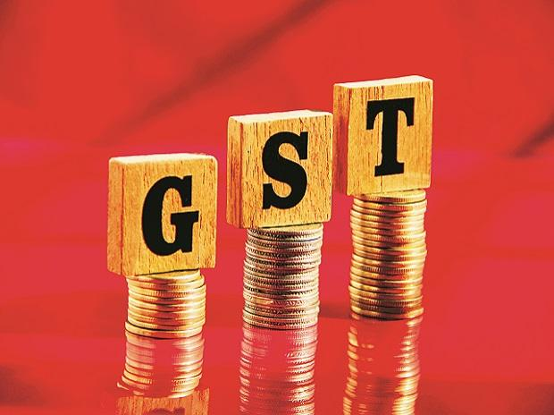
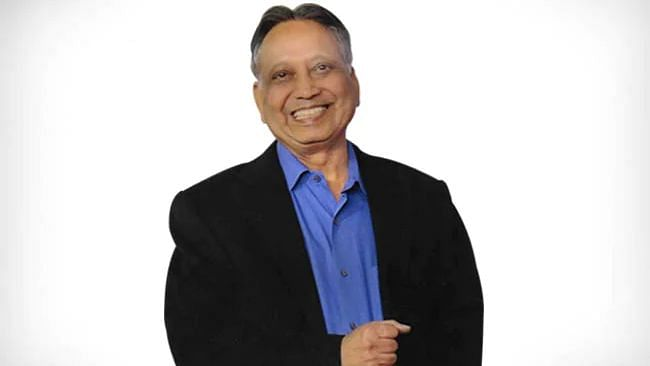

About us
Recently, a channels approach to media research has emerged (Reagan 1996) that assumes that people develop ‘repertoires’ of media and of the channels into which such media are divided. These ‘repertoires’ consist of sets of channels that individuals prefer to use to serve certain purposes. Channels are rank ordered within repetoires
GST rates cut for Covid essentials, full waiver for key medicines
The Goods and Services Tax (GST) Council Saturday cut rates on Covid-related medicines, oxygen concentrators and testing kits, but kept the rate for vaccines unchanged at 5%. Except for three items — electric furnaces used in crematoriums, temperature-checking instruments and ambulances — the Council, at its 44th meeting, accepted all other recommendations for tax rates at the same level as suggested by a Group of Ministers (GoM) constituted on the issue. The changes would be notified soon, officials said, and will be valid, as of now, until September 30. Differing views over the extent of reduction on Covid essentials resurfaced between the states and the Centre. Opposition-ruled states asked for exemption or zero rating for Covid essentials which they said was not considered by the Centre in the meeting. These state FMs said the recommendations of the GoM were finalised without taking their views into consideration. West Bengal’s Finance Minister Amit Mitra suggested zero rating for Covid essentials or 0.1 per cent GST rate for such items — a suggestion earlier made by BJP’s Rajya Sabha MP Sushil Kumar Modi. Mitra, in a letter to Union Finance Minister Nirmala Sitharaman after the meeting, said his voice was “muzzled” in the meeting and his remarks “deleted”. Punjab Finance Minister Manpreet Singh Badal said it’s a “once in a century” crisis and the GoM should “stop acting like a Shahenshah”. Though no state pressed for voting, the call for zero or zero rating for Covid essentials became a contentious issue.
Padma Shri recipient Dr Ashok Panagariya dies of post-Covid complications
Dr Ashok Panagariya was on ventilator support for the past several days at a private hospital
Prominent neurologist and Padma Shri recipient Dr Ashok Panagariya died of post-Covid complications here on Friday. He was 71. Dr Panagariya was on ventilator support for the past several days at a private hospital. His condition deteriorated in the past two days and he died on Friday, hospital sources said. Expressing grief over his death, Prime Minister Narendra Modi said in a tweet that his pioneering work in the medical field will benefit generations of doctors and researchers. “Dr Ashok Panagariya made a mark as an outstanding neurologist. His pioneering work in the medical field will benefit generations of doctors and researchers. Saddened by his demise. Condolences to his family and friends. Om Shanti,” the PM tweeted. Meanwhile, Rajasthan Chief Minister Ashok Gehlot said the passing away of the nationally renowned neurologist was a personal loss for him and his family. He said Dr Panagariya held important posts and played an important role in the state as a medical expert during the coronavirus pandemic.